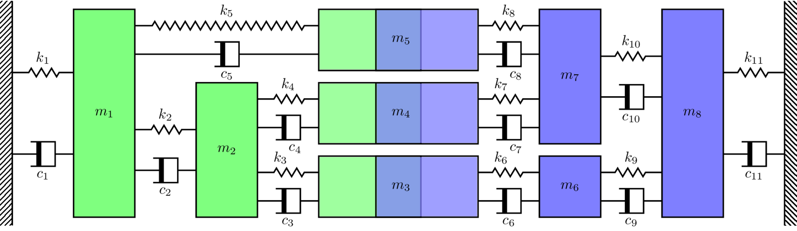
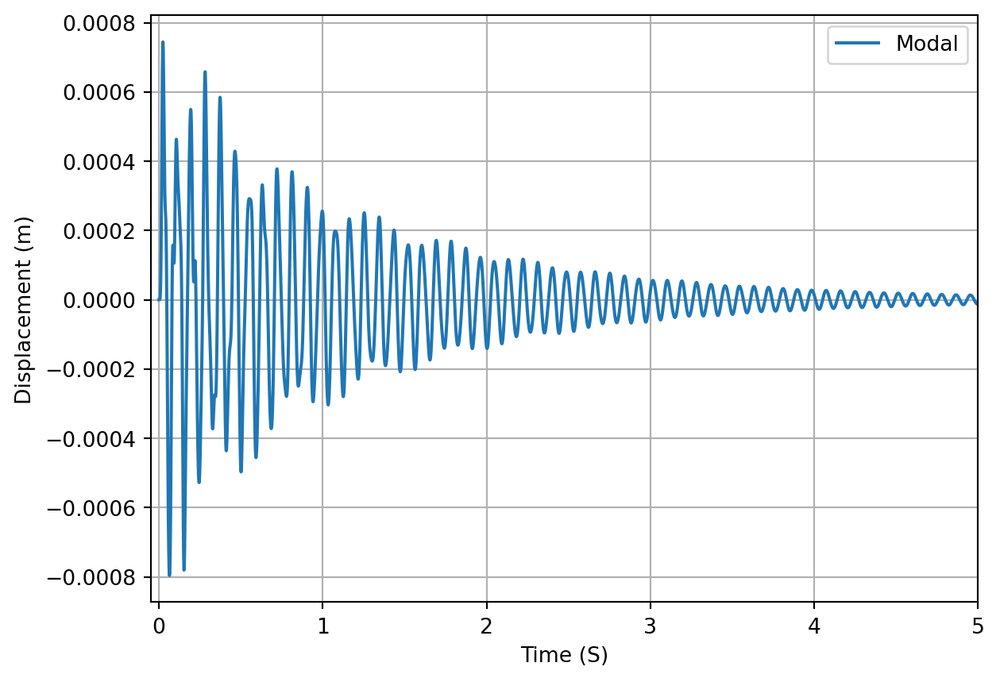
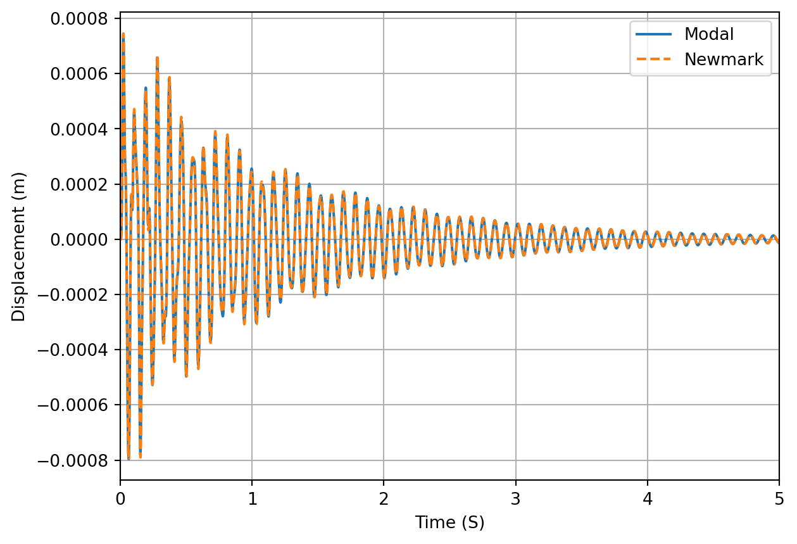
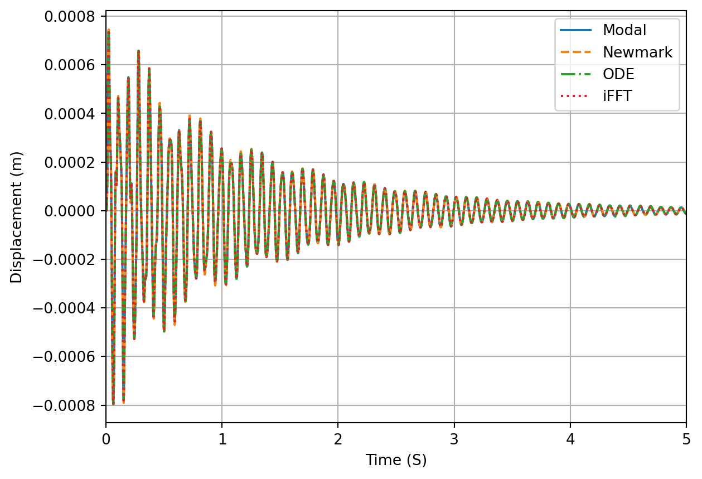

Synthesizing IRFs from mass, stiffness and damping
In this tutorial we will introduce a few different methods that can be used to compute the impulse response function (IRF) of a numerical system when the mass, stiffness and damping matrices are known. Specifically, we will look at modal synthesis (for proportionally damped systems only), numerical integration, and inverse Fourier transform methods.
A little bit of theory
So, what is an impulse response function (IRF) and why might we want it? As the name suggests, the IRF of a system is its response when excited by a (unit) impulse, i.e. an external force of very short duration. More specifically, the unit impulse response of a system is the response obtained by considering the external forcing \(F(t)\) to be that of a Dirac delta function, defined mathematically as \[
\begin{align}
\delta(t-a) &= 0 \quad \quad \mbox{for } t\neq a\\
\int_{-\infty}^\infty \delta(t-a){\rm d}t &=1
\end{align}
\tag{1}\] For all intents and purposes we can think of this \(\delta\) as a very sharp and sudden kick which disappears immediately after impact. The response of a system (say displacement, \({x}(t)\)) due to such excitation is labelled \({g}(t)\) and termed the IRF.
Now, why might we want the IRF? It can be shown (see our previous discussion of forced single DoF systems) that, for a linear and time invariant system, the response due to an arbitrary time varying force \(F(t)\) can be expressed in the form of a convolution integral involving the IRF, \[
x(t) = \int_0^t F(\tau) g(t-\tau) d\tau
\tag{2}\] In vibration analysis, Equation 2 is also called Duhamel’s integral; it states that the response of a system at time \(t\) is simply the super-position of all previously applied forces weighted appropriately by the IRF. Key to its application is knowing the IRF of the system.
In this tutorial we will consider general multi-DoF system that are described by an equation of motion of the form, \[
\mathbf{M}\ddot{\mathbf{x}}(t) + \mathbf{C}\dot{\mathbf{x}}(t) + \mathbf{K}\mathbf{x}(t) = \mathbf{f}(t).
\tag{3}\] where we will seek the solution \(\mathbf{x}(t)\rightarrow \mathbf{g}(t)\) for the case whereby \(\mathbf{f}(t) \rightarrow \delta_j(0)\), where \(\delta_j(0)\) is a delta function applied to the \(j\)th DoF only.
To illustrate the various methods for computing \(\mathbf{g}(t)\), we will use the same numerical mass-spring system as in our previous Synthesising FRFs tutorial, as illustrated in Figure 1.

Figure 1: Numerical mass-spring assembly used for FRF synthesis example.
We begin by re-defining the mass and stiffness matrices \(\mathbf{M}\) and \(\mathbf{K}\) for the system in Figure 1 and computing the system FRFs for inspection purposes.
Figure 2: Frequency Response Function (FRF) of the numerical mass-spring system considered in this tutorial.
Modal synthesis
We saw in our treatment of single DoF systems that the IRF can be synthesied by applying an initial velocity that is inverse proportional to the mass, \(\dot{x}_0 = 1/M\). The IRF is then given by, \[
\begin{align}
g(t) &= \frac{1}{\omega_d m} \sin(\omega_d t) e^{-\zeta\omega_n t} \quad &t>0 \\
&=0 &t<0
\end{align}
\] The same approach can be taken for a multi-DoF system by treating each mode as a single DoF system and super-imposing their individual IRFs (we can do this because our system is linear and we are assuming proportional damping!). From our treatment of general multi-DoF systems we have for the system response due an initial displacement \(\mathbf{x}_0\) and velocity \(\dot{\mathbf{x}}_0\), \[
\begin{align}
\mathbf{x}(t) &= \sum_r^N \mathbf{u}_r \left({\color{red}\mathbf{u}^{\rm T}_r\mathbf{M} \mathbf{x}_0 }\, \cos\omega_{d,r} t + {\color{green}\frac{1}{\omega_{d,r} }\mathbf{u}^{\rm T}_r\mathbf{M} \left(\dot{\mathbf{x}}_0 + \zeta_r\omega_{r} \mathbf{x}_0 \right)}\, \sin\omega_{d,r} t \right)e^{-\zeta_r\omega_{r} t}
\end{align}
\tag{4}\] Considering the IRF, for which \(\mathbf{x}_0 = \mathbf{0}\) by definition, Equation 4 reduces to, \[
\begin{align}
\mathbf{x}(t) &= \sum_r^N \mathbf{u}_r \overbrace{\frac{1}{\omega_{d,r}}\mathbf{u}^{\rm T}_r\mathbf{M} \dot{\mathbf{x}}_0}^{A_n}\, \sin(\omega_{d,r} t) \, e^{-\zeta_r\omega_{r} t}
\end{align}
\tag{5}\] where \(A_n\) is the amplitude of each modal contribution, \(\omega_{d,r} = \omega_{n,r}\sqrt{1-\zeta_r^2}\) and \(\omega_{n,r}\) are the damped and undamped natural frequency of the \(r\)th mode, and \(\zeta_{r}\) is the corresponding damping factor. The undamped natural frequencies \(\omega_{n,r}\) are obtained from the solution of the eigen-problem, \[
(\mathbf{K} - \omega_{n,r}\mathbf{M}) \mathbf{u}_r = \mathbf{0}
\] Since we have assumed that the damping is proportional (i.e. \(\mathbf{C} = \alpha \mathbf{M} + \beta \mathbf{K}\)), the damping factor for mode \(r\) is given by, \[
\zeta_r = \frac{\mathbf{u}_r^{\rm T}\mathbf{C}\mathbf{u}_r}{2\omega_{n,r}}
\] Note that the mass term usually found in the denominator of \(\zeta\) corresponds to modal mass, which owing to our mass normalisation is simply 1.
Shown in Figure 3 is the IRF generated for the mass spring system in Figure 1 using the modal synthesis in Equation 5.
Code: compute impulse response function using modal summation
# Modal solution:λ, Φ_ = sp.linalg.eig(K, M) # Get mode shapes Φ_ and natural frequencies λ=ω_n**2Φ = Φ_@np.diag(1/np.sqrt(np.diag((Φ_.T@M@Φ_)))) # Mass normalise mode shapesΦCΦ = Φ.T @ C_prop @ Φ # Check modal damping matrix is diagonalnumDoF =8# Number of coupled DoFsT =10# Total time nsamp =10000# Number of samplesdt = (T/nsamp) # Sample ratet = np.linspace(0, T, nsamp) # Time vectorx = np.zeros((numDoF, nsamp)) # Initialize displacement array for each massx0 = np.zeros((numDoF,1)) # Initial displacementxd0 = np.zeros((numDoF,1)) # Initial velocityxd0[0] =1/M[0,0] # Apply impulse to specific massfor n inrange(numDoF): # Loop over modal contributions ωr = np.sqrt(λ[n]) # Undamped natural frequency from Eigen-solution ζ = ΦCΦ[n,n]/(2*ωr) # Calculate modal damping factor ωd = ωr * np.sqrt(1-ζ**2) # Damped natural frequency A =1/ωd*Φ[:,n].T@M@xd0 # Amplitude of nth mode x = x + np.outer(Φ[:,n],(A*np.sin(ωd*t))*np.exp(-ζ*ωr*t)) # Add modal contribution to total.fig, ax = plt.subplots()ax.plot(t, x[5,:],label='Modal')ax.grid(True)ax.set_xlabel('Time (S)')ax.set_ylabel('Displacement (m)')ax.set_xlim([-0.05,5])plt.legend()plt.show()

Figure 3: Impulse response of mass-spring system generated by modal synthesis. Excitation at mass 1, response at mass 5.
Numerical integration
Whilst the modal synthesis approach is straightforward and easy to implement, it is quite limited. First of all, it requires proportional damping model to ensure the underlying EoM can be diagonalised. Second, although we are mostly interested in linear structures, it would be nice to have the ability to deal with non-linearities if they arise; this is generally not possible, or at least very difficult, with the modal formulation. As such, we would like a more general method for computing the system impulse response encompassing fewer assumptions. This is achieved by working directly with the EoM in the physical domain and using numerical integration techniques.
Now, numerical integration is a massive topic with loads of different techniques available. In this tutorial we will limit ourself to two particular approaches. The first is a multi-step second order integration method called using the Newmark-\(\beta\) method. The second is a first order integration method that we implement using established algorithms/functions. Both methods can be applied to systems with non-proportional damping and, with some minor modifications, to non-linear systems also.
Broadly speaking, we can catagorise an integration scheme by the type of equation they are applied to. Direct methods are applied directly to the governing ODE, for example our second order EoM in Equation 15. The Newmark-\(\beta\) method described below is an example of a direct method. There also exist a suite of first-order methods that are applicable to first-order ODEs, this includes the popular family of Runge-Kutta methods, among many others.
A further categorisation of integration methods is whether they are explicit or implicit. In short, explicit methods solve for the response at a future time step using the solution from the current and previous time steps only. Implicit methods instead determine the response at the future time step by solving an equation that also depends on the response at the future time step. Explicit methods are generally more computationally efficient than implicit methods, though have stricter requirements regarding their stability.
Initial conditions for IRF computation
The numerical integration schemes described below take as an input the arbitrary discretized forcing signal \(\mathbf{f}_n\) and output the resulting system response. In order to obtain the system Impulse Response Function (IRF), it is necessary to force the system in such a way that approximates the ideal Dirac function described above. This can be done in a few different ways as detailed below.
Application of an initial force at \(n=0\)
To approximate a Dirac excitation we can set the initial displacement and velocity to zero, \[
\mathbf{x}_0 = \mathbf{0}
\]\[
\dot{\mathbf{x}}_0 = \mathbf{0}
\] and consider a force of amplitude \(\frac{2}{\Delta t}\) applied at timestep 0, \[
\mathbf{f}_0 = \frac{2}{\Delta t} \mathbf{1}_j
\] The reason for the force amplitude of \(\frac{2}{\Delta t}\) is to ensure that when integrated over one whole time step, the resulting impulse has a value of 1 (as per the definition of the Dirac, see Equation 1). By setting the initial force \(\mathbf{f}_0\) to \(\frac{2}{\Delta t}\) and all remaining forces to 0, we approximate the Dirac \(\delta(t=0)\) as a right angle triangle with base \(\Delta t\) and height \(\frac{2}{\Delta t}\); the total area under this triangle is 1.
With the initial displacement and velocity set to zero, the EoM reduced to, \[
\mathbf{M}\ddot{\mathbf{x}}_0 = \frac{2}{\Delta t} \mathbf{1}_j
\] which can be solved for the initial acceleration produced by the applied force \(\mathbf{f}_0\), \[
\ddot{\mathbf{x}}_0 = \frac{2}{\Delta t} \mathbf{M}^{-1} \mathbf{1}_j
\tag{6}\]Equation 6 is the initial acceleration generated by the applied force (i.e. approximation of \(\delta(0)\)), and can be used as an initial condition (instead of using \(\mathbf{f}_0\) directly) to compute the system IRF.
Application of initial force at \(n=1\)
A similar idea to the previous approach is to apply the an initial force, but instead at the second time step. In this case we set the initial displacement, velocity, and acceleration to zero, \[
\mathbf{x}_0 = \mathbf{0}
\]\[
\dot{\mathbf{x}}_0 = \mathbf{0}
\]\[
\ddot{\mathbf{x}}_0 = \mathbf{0}
\] and define the force at \(n=1\) as, \[
\mathbf{f}_1 = \frac{1}{\Delta t}\mathbf{1}_j
\] Note that the factor of two is no longer in the force amplitude. This is because our force signal is now approximating the Dirac as an equilateral triangle with base length of \(2\Delta t\); the force is 0 at \(n=0\), rises linearly up to a value of \(\frac{1}{\Delta t}\) at time \(\Delta t\), and then back down to 0 at a time \(2\Delta t\). Again, the total area under this triangle is 1.
Also, unlike the previous case, with \(\mathbf{f}_1=\frac{1}{\Delta t}\mathbf{1}_j\) our Dirac is effectively being applied on the second time step; hence the IRFs obtained must all be shifted back by 1 sample to align correctly.
The main advantage of this particular approach is that we avoid having to compute the inverse of the mass matrix \(\mathbf{M}\), which for a large numerical model might have some computationally non-negligible expense.
Applitcation of an step velocity at \(n=0\)
The final method of approximating a Dirac is be considering a step velocity at \(n=0\). To do so we first integrate our EoM over the infintesimal interval \([-\delta t, \, +\delta t]\), \[
\int_{-\delta t}^{+\delta t} \left[\mathbf{M}\ddot{\mathbf{x}}(t) + \mathbf{C}\dot{\mathbf{x}}(t) + \mathbf{K}\mathbf{x}(t) \right] {\rm d}t = \int_{-\delta t}^{+\delta t} \mathbf{f}(t) {\rm d}t
\] If we consider the force to be a Dirac \(\mathbf{f}(t) = \delta(0)\) the right hand side integrates to 1 for the DoF being excited, i.e. \(\mathbf{1}_j\). Integrating each term on the left hand side, \[
\mathbf{M}\int_{-\delta t}^{+\delta t}\ddot{\mathbf{x}}(t) {\rm d}t+ {\color{gray}\mathbf{C}\int_{-\delta t}^{+\delta t}\dot{\mathbf{x}}(t) {\rm d}t+ \mathbf{K}\int_{-\delta t}^{+\delta t}\mathbf{x}(t) {\rm d}t} = \mathbf{1}_j
\] whilst noting that the since our system is initially at rest (i.e. \(\mathbf{x}_0 = \mathbf{0}\)), the displacement and absement (integral of displacement) terms resulting the from the damping and stiffness integrals (in gray) must be 0, we obtain, \[
\mathbf{M}(\dot{\mathbf{x}}(+\delta t)-\dot{\mathbf{x}}(-\delta t)) = \int_{-\delta t}^{+\delta t} \mathbf{f}(t) {\rm d}t
\] Again, since our system is initially at rest, \(\dot{\mathbf{x}}(-\delta t)=0\). This leaves us with the initial velocity relation, \[
\mathbf{M}\dot{\mathbf{x}}_0 = \mathbf{1}_j \rightarrow \dot{\mathbf{x}}_0 = \mathbf{M}^{-1} \mathbf{1}_j
\] Note that the initial velocity \(\dot{\mathbf{x}}_0\) is not enough to completely represent the Dirac forcing; we must also include the initial acceleration that results. Noting that \(\mathbf{x}_0 = \mathbf{0}\) and that the Dirac forcing is accounted for by \(\dot{\mathbf{x}}_0\), our initial EoM reduces to, \[
\mathbf{M}\ddot{\mathbf{x}}_0 + \mathbf{C}\dot{\mathbf{x}}_0 = \mathbf{0}
\] from which we obtain for the initial acceleration, \[
\ddot{\mathbf{x}}_0 = -\mathbf{M}^{-1}\mathbf{C}\dot{\mathbf{x}}_0
\] In summary, by using the initial conditions: \[
\mathbf{x}_0 = \mathbf{0}
\]\[
\dot{\mathbf{x}}_0 = \mathbf{M}^{-1} \mathbf{1}_j
\]\[
\ddot{\mathbf{x}}_0 = -\mathbf{M}^{-1}\mathbf{C}\dot{\mathbf{x}}_0
\] we can compute the IRF of a system through numerical integration.
Newmark-\(\beta\) method
From Equation 15, the dynamic equilibrium at timestep \(n+1\) can be written as, \[
\mathbf{M}\ddot{\mathbf{x}}_{n+1} + \mathbf{C}\dot{\mathbf{x}}_{n+1} + \mathbf{K}\mathbf{x}_{n+1} = \mathbf{f}_{n+1}.
\tag{7}\]
To solve Equation 7, the Newmark-\(\beta\) method approximates the displacement and velocity at \(n+1\) by, \[
\mathbf{x}_{n+1} = \overbrace{\mathbf{x}_n + \Delta_t \dot{\mathbf{x}}_n + \Delta_t^2(0.5-\beta) \ddot{\mathbf{x}}_n}^{{\rm Predictor: \,} \mathbf{\tilde{x}}_{n+1} } + \overbrace{\Delta_t^2 \beta \ddot{\mathbf{x}}_{n+1}}^{{\rm Corrector}}
\tag{8}\] and \[
\dot{\mathbf{x}}_{n+1} = \overbrace{\dot{\mathbf{x}}_{n} + \Delta_t (1-\gamma) \ddot{\mathbf{x}}_n}^{{\rm Predictor: \,} \dot{\mathbf{\tilde{x}}}_{n+1} } + \overbrace{\Delta_t \gamma \ddot{\mathbf{x}}_{n+1}}^{{\rm Corrector}}
\tag{9}\] where the constants \(0\leq\gamma\leq 1\) and \(0\leq\beta\leq 1\) control the relative weighting of the \(n\) and \(n+1\) acceleration contributions to \(\mathbf{x}_{n+1}\) and \(\dot{\mathbf{x}}_{n+1}\), and also the stability properties of the scheme. A common choice that yields an implicit and unconditionally stable scheme is \(\gamma = 1/2\) and \(\beta = 1/4\) (termed average constant acceleration method and equivalent to the trapezoidal integration rule).
Note that at a given time step \(n\), the acceleration term \(\ddot{\mathbf{x}}_{n+1}\) is not available and so Equation 8 and Equation 9 cannot be computed directly. The idea behind the Newmark-\(\beta\) method is to approximate \(\mathbf{x}_{n+1}\) and \(\dot{\mathbf{x}}_{n+1}\) using the terms that are available – these are termed the predictors\(\mathbf{\tilde{x}}_{n+1}\) and \(\dot{\mathbf{\tilde{x}}}_{n+1}\) – and later correct for the missing terms when an estimate for the acceleration \(\ddot{\mathbf{x}}_{n+1}\) is available.
Substituting Equation 8 and Equation 9 into Equation 7 we \[
\mathbf{M}\ddot{\mathbf{x}}_{n+1} + \mathbf{C}\left[\dot{\mathbf{\tilde{x}}}_{n+1} + \Delta_t \gamma \ddot{\mathbf{x}}_{n+1} \right] + \mathbf{K}\left[\mathbf{\tilde{x}}_{n+1} + \Delta_t^2 \beta \ddot{\mathbf{x}}_{n+1} \right] = \mathbf{f}_{n+1}
\tag{10}\] and moving all predictor terms to the right hand side we have, \[
\mathbf{M}\ddot{\mathbf{x}}_{n+1} + \mathbf{C} \Delta_t \gamma \ddot{\mathbf{x}}_{n+1} + \mathbf{K} \Delta_t^2 \beta \ddot{\mathbf{x}}_{n+1} = \mathbf{f}_{n+1} - \mathbf{C}\dot{\mathbf{\tilde{x}}}_{n+1} - \mathbf{K}\mathbf{\tilde{x}}_{n+1}
\tag{11}\] Factoring out the acceleration term on the left hand side, \[
\overbrace{\left(\mathbf{M} + \mathbf{C} \Delta_t \gamma + \mathbf{K} \Delta_t^2 \beta \right)}^{\mathbf{A}} \ddot{\mathbf{x}}_{n+1} = \mathbf{f}_{n+1} - \mathbf{C}\dot{\mathbf{\tilde{x}}}_{n+1} - \mathbf{K}\mathbf{\tilde{x}}_{n+1}
\tag{12}\] we can compute the inverse of the constant terms and solve for \(\ddot{\mathbf{x}}_{n+1}\), \[
\ddot{\mathbf{x}}_{n+1} = \mathbf{A}^{-1}\left(\mathbf{f}_{n+1} - \mathbf{C}\dot{\mathbf{\tilde{x}}}_{n+1} - \mathbf{K}\mathbf{\tilde{x}}_{n+1}\right)
\tag{13}\] After computing the acceleration \(\ddot{\mathbf{x}}_{n+1}\), we can correct our estimates of displacement and velocity, \[
\mathbf{x}_{n+1} = \mathbf{\tilde{x}}_{n+1} + \overbrace{\Delta_t^2 \beta \ddot{\mathbf{x}}_{n+1}}^{{\rm Corrector}}
\] and \[
\dot{\mathbf{x}}_{n+1} = \dot{\mathbf{\tilde{x}}}_{n+1} + \overbrace{\Delta_t \gamma \ddot{\mathbf{x}}_{n+1}}^{{\rm Corrector}}
\] We now have estimates for \(\mathbf{x}_{n+1}\), \(\dot{\mathbf{x}}_{n+1}\) and \(\ddot{\mathbf{x}}_{n+1}\) and can proceed to the next time step.
In the code snippet below implement the Newmark-\(\beta\) method and apply it to our discrete mass-spring system to compute its IRF. To do this use the initial velocity condition \(\dot{\mathbf{x}}_0 = \mathbf{1}_j m_j\) as described above. We see that the resulting IRF is in agreement with that of the modal synthesis before.
Code: compute the IRF using Newmark method and compare against modal solution and scipy.integrate.ode
# Define Newmark functions:def newmarkImp(M, C, K, L, dt, e, gamma=0.5, beta=0.25, type='initForce'): ndof = M.shape[0] # Number of DOFs tSteps =int(L/dt)iftype=='initForce': # Initial force applied by acceleration IC Pj = np.zeros((ndof,)) Pj[e] =1 u = np.zeros((ndof, tSteps)) ud = np.zeros((ndof, tSteps)) udd = np.zeros((ndof, tSteps)) udd[:, 0] = np.linalg.inv(M)@Pj*2/dt f = np.zeros((ndof, tSteps)) f[e, 0] =0eliftype=='stepVel': # Initial force applied by equivalent initial velocity IC Pj = np.zeros((ndof,)) Pj[e] =1 u = np.zeros((ndof, tSteps)) ud = np.zeros((ndof, tSteps)) udd = np.zeros((ndof, tSteps)) ud[:, 0] = np.linalg.inv(M)@Pj udd[:, 0] =-np.linalg.inv(M)@C@ud[:, 0] f = np.zeros((ndof, tSteps)) f[e, 0] =0eliftype=='secondForce': # Dirac force at second time step Pj = np.zeros((ndof,)) Pj[e] =1 u = np.zeros((ndof, tSteps)) ud = np.zeros((ndof, tSteps)) udd = np.zeros((ndof, tSteps)) f = np.zeros((ndof, tSteps)) f[e, 1] =1/dt t = np.linspace(0, L-dt, int(L/dt)) # Time array A = np.linalg.inv(M+gamma*dt*C+beta*(dt**2)*K) # Acceleration update matrixfor tn inrange(1, t.shape[0]): # Start loop at second time step# Prediction step:# Displacement prediction based on previous u, ud and udd u[:, tn] = u[:, tn-1]+dt*ud[:, tn-1]+(0.5-beta)*dt**2*udd[:, tn-1]# Velocity prediction based on previous ud and udd ud[:, tn] = ud[:, tn-1]+(1-gamma)*dt*udd[:, tn-1]# Acceleration prediction based on current u and ud udd[:, tn] = A@(f[:, tn]-K@u[:, tn]-C@ud[:, tn])# Correction step:# Displacement update using prediced udd u[:, tn] = u[:, tn]+dt**2*beta*udd[:, tn]# Velocity update using prediced udd ud[:, tn] = ud[:, tn]+dt*gamma*udd[:, tn]return u, ud, udd# %% Define system parameters and initial conditionsndof =8# Number of DoFsu_NM, ud_NM, udd_NM = newmarkImp(M, C_prop, K, T, dt, 0, gamma=0.5, beta=0.25,type='stepVel')fig, ax = plt.subplots()ax.plot(t, x[5,:],label='Modal')ax.plot(t, u_NM[5,:],'--',label='Newmark')ax.grid(True)ax.set_xlabel('Time (S)')ax.set_ylabel('Displacement (m)')ax.set_xlim([0,5])plt.legend()plt.show()

Figure 4: Impulse response of mass-spring system generated using second order Newmark integration. Excitation at mass 1, response at mass 5.
First order integration
There exists a wide range of numerical methods for solving ordinary differential equations (ODE). Many of these are designed to solve general first-order Initial Value Problems (IVPs). These are problems that take the form, \[
\frac{dy}{dt} = f(y,t) \quad \quad \mbox{with} \quad \quad y(t_0) = y_0
\tag{14}\] where \(y(t)\) is the sought after solution, \(f(y,t)\) is a function that describes its derivative with respect to \(t\) and \(y_0\) is the initial value of \(y\) at \(t=0\). The fact that we have limited ourselves to first order ODE here (meaning that no higher order derivatives are present in Equation 14) at first sounds somewhat limiting. However, as we will see shortly, higher-order ODEs can be converted into a larger system of first-order equations by introducing extra variables, and so Equation 14 is broadly applicable to most IVPs.
The advantage of working with a first order equation, as in Equation 14, is that we can avoid having to code our own time stepping integration algorithm and instead use one of the many preexisting functions/packages such as ODE45 in MATLAB, or scipy.integrate.ode in Python. It is beyond the scope of this tutorial to give a detailed description of the various methods available to solve Equation 14; this information is available through the relevant MATLAB/scipy documentation. In the numerical example below we will use the standard scipy.integrate.ode function.
Our first job is to convert our second order ODE into a first order ODE. Recall our EoM for a general MDOF system, \[
\mathbf{M}\ddot{\mathbf{x}}(t) + \mathbf{C}\dot{\mathbf{x}}(t) + \mathbf{K}\mathbf{x}(t) = \mathbf{f}(t)
\tag{15}\] To convert Equation 15 into a first order ODE we combine the displacement and velocity into a single solution vector, as with their respective derivatives, \[
\mathbf{y} = \left(\begin{array}{c} \mathbf{x} \\ \dot{\mathbf{x}} \end{array}\right) \quad \mbox{and} \quad \dot{\mathbf{y}} = \left(\begin{array}{c} \dot{\mathbf{x}} \\ \ddot{\mathbf{x}} \end{array}\right)
\] Inspecting Equation 15, we can rewrite our ODE in the form, \[
\dot{\mathbf{y}} = \mathbf{A} \mathbf{y} + \mathbf{B}\mathbf{f} \quad \quad \left(\begin{array}{c} \dot{\mathbf{x}} \\ \ddot{\mathbf{x}} \end{array}\right) = \left[\begin{array}{cc}\mathbf{0} & \mathbf{I} \\ \mathbf{M}^{-1}\mathbf{K} & \mathbf{M}^{-1}\mathbf{C} \end{array}\right]\left(\begin{array}{c} \mathbf{x} \\ \dot{\mathbf{x}} \end{array}\right) + \left[\begin{array}{c} \mathbf{0} \\ \mathbf{M}^{-1} \end{array}\right]\mathbf{f}
\tag{16}\] where it is noted that the top row of Equation 16 simply states that \(\dot{\mathbf{x}} = \dot{\mathbf{x}}\). Notice that we have doubled the number of unknowns in our solution (\(\mathbf{x}\in\mathbb{R}^N\) but \(\mathbf{y}\in\mathbb{R}^{2N}\)), but reduced the problem to first order in \(\mathbf{y}\). Equation 16 can now be dealt with using standard IVP solvers such as ODE45 in MATLAB, or scipy.integrate.ode in Python.
In the code snippet below we use the Python scipy.integrate.ode package to solve our ODE. Note that to do this we must write a function that describes our first-order ODE, taking as inputs the solution vector \(\mathbf{y}\) and the current time step \(t_i\), as well as the system properties (\(\mathbf{M}\), \(\mathbf{C}\) and \(\mathbf{K}\)). To obtain the impulse response function as the solution, we set \(\mathbf{f} = 0\) and the initial velocity of the \(j\)th mass as \(\dot{\mathbf{x}}_{0,j} = 1/M_j\). As expected we get a near identical IRF compared to the modal summation from before. Note however, that the numerical IRF is only an approximation in the sense that numerical integration is an approximate method for computing the solution to an IVP, requiring a balance between accuracy and computation effort through the specification of error tolerances, etc.
Code: compute the IRF using scipy.integrate.ode and compare against modal solution
Figure 5: Impulse response of mass-spring system generated using first order numerical integration. Excitation at mass 1, response at mass 5.
Inverse Fourier transform
Finally, we can compute the system impulse response directly from its Frequency Response Function (FRF) \(H(\omega)\) by using the inverse Fourier transform. To do so we simply need to reconstruct the complex double sided spectrum from the single sided spectrum that is \(H(\omega)\), \[
S(\vec{\omega}) = \left[\begin{array}{ccccc|cccc}
H(0) & H(\omega_0) & H(\omega_1) & \cdots & H(\omega_N) & H^*(\omega_N) & H^*(\omega_{N-1}) & \cdots & H^*(\omega_0)
\end{array}\right]
\] With \(S(\vec{\omega})\) built, IRF is then given by, \[
G(\,\vec{t}\,) = \frac{1}{\Delta t} \mbox{iFT}\left(S(\vec{\omega}) \right)
\] where \(\Delta t\) is the sample rate of the IRF and \(\mbox{iFT}(\square)\) is any standard implementation of the inverse Fourier Transform (for example using scipy.fft.ifft).
Note that there are some important relations between the sample rate \(\Delta t\), impulse length \(T\), frequency resolution \(\Delta f\) and maximum frequency \(f_N\) of the FRF that must be satisfied to obtain a corretly scaled IRF in both time and amplitude:
The sample rate \(\Delta t\) is inversely proportional to the so-called Nyquist frequency, which for our purposes corresponds to the maximum frequency of the measured FRF \(f_{N} = 1/(2 \Delta t)\).
The total number of samples \(N_{samp}\) is related to the sample rate \(\Delta t\) and the impulse length \(T\) by \(N_{samp} = \Delta t T\).
The frequency resolution \(\Delta f\) is related to the maximum frequency and the number of samples \(N_{samp}\) by \(\Delta f = f_{N}/N_{samp}\)
In the code snippet below we synthesis the FRF of the assembly with an appropriate \(\Delta f\) and \(f_N\) and compute the IRF by the iFFT. We see that the IRF agrees with all previous methods.
Code: compute the IRF using inverse Fourier transform of the Frequency Response Function
T =10# Total impulse time nsamp =10000# Number of samplesΔt = T/nsamp # Sample ratef_nq =1/dt/2# Nyquist limit (max FRF frequency)Δf = f_nq/nsamp # Frerquency resolutionf = np.linspace(0,f_nq,int(nsamp/2)) # Generate frequency arrayω =2*np.pi*f # Convert to radians# Direct solution:Y_C_dir_prop = np.linalg.inv(K +1j* np.einsum('i,jk->ijk',ω, C_prop) - np.einsum('i,jk->ijk',ω**2, M))doubleSidedH = np.hstack((Y_C_dir_prop[:,0,5], np.flip(Y_C_dir_prop[1:,0,5].conj()))) # Build double sided spectrumu_FFT =1/Δt * np.real(sp.fft.ifft(doubleSidedH))fig, ax = plt.subplots()ax.plot(t, x[5,:],label='Modal')ax.plot(t, u_NM[5,:],'--',label='Newmark')ax.plot(t, u_ODE[5,:],'-.',label='ODE')ax.plot(t[0:-1], u_FFT[:],':',label='iFFT')ax.grid(True)ax.set_xlabel('Time (S)')ax.set_ylabel('Displacement (m)')ax.set_xlim([0,5])plt.legend()plt.show()

Figure 6: Impulse response of mass-spring system generated using inverse Fourier transform of the system FRF. Excitation at mass 1, response at mass 5.
Summary
In this tutorial we have introduced the Impulse Response Function (IRF) as a time domain representation of a system’s dynamics. Knowing the IRF of a system allows us to predict its response to an arbitary time varying input force. It is a very useful tool in structural dynamics and forms the basis of Impulse-based Substructuring (IBS, a substructuring technique formulated in the time domain).
We have covered 3 different approaches for computing IRFs, including modal synthesis (only applicable to proportional damped systems), numericl integration (including both Newmark multi-step and first order methods) and inverse Fourier transform of the system FRF. All methods were demonstrated on a simple discrete mass-spring system, and shown to return the same IRF.